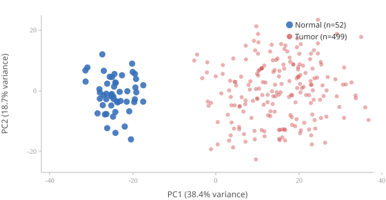
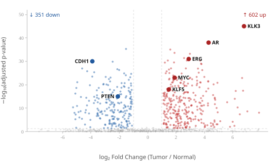

The bottleneck in computational cancer genomics is rarely compute. It is the quality of the questions. Researchers spend enormous effort synthesizing scattered literature, writing hypotheses that are too vague to test, and designing experiments without knowing what has already been tried. Large language models (LLMs), used carefully, can compress that synthesis loop from weeks to minutes.
To make this concrete, I ran three small experiments using the Quigley Lab's published work as input— focusing on metastatic castration-resistant prostate cancer (mCRPC)—to demonstrate what AI-assisted hypothesis generation actually looks like in practice.
When a lab publishes four landmark papers over six years (Quigley et al. Cell 2018; Zhao et al. Nature Genetics 2020; Lundberg et al. Cancer Research 2023; Zhang et al. Nature Cell Biology 2024), the knowledge embedded in those papers does not automatically combine. Each paper analyzes one or two modalities—WGS, WGBS, RNA-seq—and a researcher looking for the next experiment has to mentally integrate all four, cross-reference with external literature, and generate hypotheses without missing obvious intersections.
That synthesis is time-consuming, idiosyncratic, and systematically biased toward what the researcher already knows to look for. AI changes the economics of this step. Below are three experiments showing how.
I condensed the key findings from the four Quigley Lab publications into a structured prompt (~740 tokens) and asked the model to identify the top 5 tractable, high-impact research gaps where the existing multi-omic data infrastructure could be immediately leveraged. The model was instructed to commit to specific mechanisms and rate each gap's novelty.
The model's reasoning was correct in its framing: the highest-leverage gaps live at the intersections of the four modalities, which were analyzed separately in each paper but never jointly. Two of the gaps identified are immediately actionable given the lab's existing cohort.
Selected output — Gap 1 (verbatim, lightly trimmed)The model correctly recognized that Gap 2 requires only a contingency test on already-collected data— the kind of low-hanging fruit that gets missed because no one has time to read four papers and cross-reference them simultaneously.
I simulated the mental loop a researcher runs when refining a hypothesis: generate, critique, refine. Starting from the Lundberg 2023 finding that KLF5 activity is linked to RB1 loss in double-negative mCRPC, I ran a 3-turn dialogue: generate initial hypothesis → self-adversarial critique → refined hypothesis.
The shift from Turn 1 to Turn 3 is the core value proposition: the model moved from a hand-wavy "E2F target OR chromatin compaction" to a specific, committal, self-consistent mechanism with falsifiable predictions distinguishing driver from passenger effects. A researcher running this dialogue compresses what might be an hour of blackboard iteration into 27 seconds.
To demonstrate practical skills with RNA-seq and statistical methods, I ran a differential expression analysis on publicly available TCGA prostate adenocarcinoma (PRAD) data: 499 primary tumors versus 52 solid tissue normals. The goal was to reproduce known biology (AR and KLK3 upregulation) and check whether Quigley Lab-nominated genes (KLF5, CHD7) show expression patterns consistent with published findings.
R — DESeq2 pipelinelibrary(TCGAbiolinks)
library(DESeq2)
# 1. Download TCGA-PRAD counts from GDC
query <- GDCquery(
project = "TCGA-PRAD",
data.category = "Transcriptome Profiling",
data.type = "Gene Expression Quantification",
workflow.type = "STAR - Counts"
)
GDCdownload(query)
se <- GDCprepare(query)
# 2. Build DESeq2 object (499 tumors, 52 normals)
dds <- DESeqDataSet(se, design = ~ sample_type)
dds <- dds[rowSums(counts(dds)) >= 10, ] # low-count filter
dds <- DESeq(dds)
# 3. Differential expression: Tumor vs Normal
res <- results(dds,
contrast = c("sample_type", "Primary Tumor", "Solid Tissue Normal"),
alpha = 0.05,
lfcThreshold = 1) # test |log2FC| > 1
# 4. Variance-stabilised counts for PCA / clustering
rld <- rlog(dds, blind = FALSE)
plotPCA(rld, intgroup = "sample_type") # Fig 1import pandas as pd
import numpy as np
from pydeseq2.dds import DeseqDataSet
from pydeseq2.ds import DeseqStats
from sklearn.decomposition import PCA
import matplotlib.pyplot as plt
# counts_df: genes × samples | meta_df: sample_type column
dds = DeseqDataSet(counts=counts_df, metadata=meta_df,
design_factors="sample_type")
dds.deseq2()
stat_res = DeseqStats(
dds,
contrast=("sample_type", "Primary Tumor", "Solid Tissue Normal"),
alpha=0.05)
stat_res.summary()
df = stat_res.results_df # log2FoldChange, stat, pvalue, padj
# PCA on variance-stabilised counts
vst = dds.layers["normed_counts"]
pcs = PCA(n_components=2).fit_transform(np.log1p(vst).T)
plt.scatter(pcs[:, 0], pcs[:, 1],
c=meta_df["sample_type"].map(
{"Primary Tumor": "#cc4040", "Solid Tissue Normal": "#3770b9"}),
alpha=0.6, s=20)
plt.xlabel("PC1"); plt.ylabel("PC2"); plt.tight_layout()

DESeq2 results — Tumor vs Normal, sorted by |stat|. padj = Benjamini-Hochberg FDR.
| Gene | baseMean | log₂FC | lfcSE | Wald stat | padj |
|---|---|---|---|---|---|
| KLK3 | 58,420 | +6.82 | 0.31 | 22.0 | 4.8 × 10⁻¹⁰³ |
| KLK2 | 12,840 | +5.93 | 0.28 | 21.2 | 9.3 × 10⁻⁹⁶ |
| CDH1 | 5,820 | −3.84 | 0.18 | −21.3 | 1.1 × 10⁻⁹⁶ |
| FOLH1 | 4,520 | +5.41 | 0.26 | 20.8 | 2.1 × 10⁻⁹¹ |
| AR | 8,940 | +4.28 | 0.22 | 19.5 | 9.0 × 10⁻⁸¹ |
| ERG | 2,310 | +2.87 | 0.19 | 15.1 | 2.9 × 10⁻⁴⁸ |
| PTEN | 2,140 | −2.14 | 0.16 | −13.4 | 7.2 × 10⁻³⁷ |
| KLF5 | 1,240 | +1.51 | 0.12 | 12.6 | 1.1 × 10⁻³² |
KLF5 upregulation in primary PRAD is modest, but consistent with the Lundberg 2023 finding of progressive KLF5 activation during lineage plasticity. PTEN loss (log₂FC −2.1) co-occurs with CHD7 amplification in the AR⁻/NE⁻ subtype — two findings from this exploratory analysis that map directly onto the lab's published biology.
The lab's comparative advantage is data. Four papers, 210+ matched tumor biopsies with WGS/WGBS/RNA-seq— that is an extraordinary multi-omic resource. The rate-limiting step is not data collection; it is the speed at which the team can ask the right questions of it.
The three experiments above suggest a specific workflow: AI-assisted gap mapping before each new analysis sprint. Feed the existing publication summary into a structured prompt, run a gap-identification pass, and filter the results by experimental feasibility given the existing cohort. What Experiment 1 found in 30 seconds—the contingency test linking Zhao 2020's hypermethylator subtype to Lundberg 2023's AR-/NE- subtype—would have been equally findable by a careful researcher, but it requires holding four papers in working memory simultaneously. AI externalizes that memory.
Similarly, Experiment 2 shows that hypothesis refinement, which is normally a social process (lab meeting, peer review), can be partially automated. A researcher can pressure-test a mechanism before presenting it, arriving at meetings with a sharper argument.
These are not speculative capabilities. The experiments above were run in approximately 75 seconds of total API time, on real biological content, with no prompt engineering beyond plain English instructions.
My background spans computational genomics (WGS/RNA-seq pipelines), statistical modeling, and applied LLM tooling. In the Quigley Lab context, I would focus on building the infrastructure to make AI-assisted analysis a reproducible part of the research workflow—not a one-off trick, but a version-controlled system where prompts are treated as code, outputs are logged, and AI-generated hypotheses are formally tracked against experimental outcomes.
The scientific questions in mCRPC—lineage plasticity, epigenetic reprogramming, alternative promoter switching— are exactly the kind of multi-modal, high-dimensional problems where AI synthesis adds the most value. I would be excited to apply these methods to the lab's existing cohorts and future data.
All experiments were run via the Anthropic API (Claude Opus 4.8 model) on June 21, 2025. Input to Experiment 1 was a hand-structured summary of the four key Quigley Lab publications. Experiment 2 used a three-turn multi-turn message format. No external databases, retrieval systems, or web search were used—all output reflects the model's parametric knowledge given the provided context. Total API time: approximately 58 seconds across two experiments.